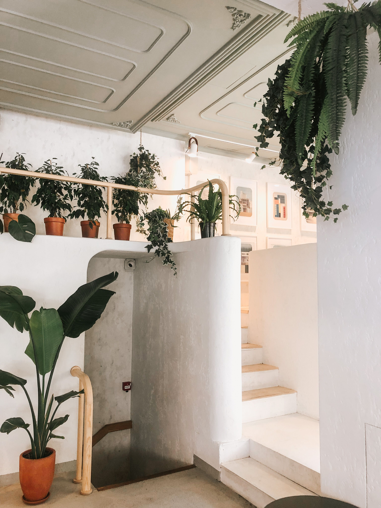

En este artículo
Introducción
Renovar un dormitorio no siempre exige comprar mobiliario nuevo. Reorganizar la distribución, trabajar con textiles, iluminación, paredes y pequeños detalles puede cambiar por completo la sensación del espacio aprovechando lo que ya tienes.
Antes de realizar cambios conviene observar el espacio, medir y definir qué problema quieres resolver. Trabajar con una intención clara evita compras impulsivas y ayuda a que cada decisión aporte comodidad, orden o identidad.
Reorganiza la distribución antes de comprar nada
Antes de pensar en comprar, observa el dormitorio como si fuera la primera vez que entras. Retira temporalmente adornos, ropa acumulada y objetos que no pertenecen a la habitación. Una base despejada permite descubrir si el problema es realmente el mobiliario o simplemente una distribución que ya no funciona.
Mide los recorridos principales: entrada, armario, ventanas y ambos lados de la cama cuando sea posible. Mover una cómoda a otra pared o centrar mejor la cama puede liberar espacio visual sin gastar nada. Si el dormitorio es pequeño, evita colocar muebles altos en el punto donde la vista entra a la habitación, porque pueden hacer que el espacio parezca más cerrado.
Prueba los cambios durante varios días antes de considerarlos definitivos. Una distribución puede verse bien y resultar incómoda al abrir un cajón o hacer la cama. La funcionalidad diaria debe guiar la decisión. También conviene revisar qué muebles podrían tener una función diferente: un banco puede convertirse en apoyo para ropa de cama; una silla, en rincón de lectura; una cómoda baja, en superficie para una lámpara.
No intentes ocupar cada pared. Dejar una zona libre ayuda a que el dormitorio respire. La renovación comienza muchas veces quitando, no añadiendo.
Para tomar decisiones con más seguridad, conviene trabajar por etapas y evaluar el resultado antes de seguir. Una modificación sencilla puede resolver más de lo esperado. Cuando se cambia distribución, color o iluminación, espera unos días y observa el espacio en diferentes momentos. La luz natural, el uso cotidiano y la circulación revelan aspectos que no aparecen en una fotografía de inspiración.
El presupuesto también debe formar parte del diseño. Define primero las necesidades y después asigna dinero a las piezas que realmente afectan al confort. Comprar varios accesorios económicos sin planificación puede costar lo mismo que una sola solución de mayor utilidad. Reutilizar, mover y editar lo existente es parte de una decoración inteligente.
Renueva la zona de la cama con textiles y capas
La cama suele ser el punto visual dominante del dormitorio y, por eso, ofrece la oportunidad más rápida de renovar el ambiente. No necesitas cambiar el cabecero ni comprar un conjunto completo. Una funda nórdica, una colcha, cojines y una manta colocados con intención pueden modificar color, textura y sensación de confort.
Trabaja con dos o tres tonos principales. Una base neutra permite introducir un color más intenso en cojines o manta sin cansar. Si la habitación ya tiene muebles de madera oscura, textiles claros pueden equilibrar el peso visual; si los muebles son muy claros, tejidos con textura aportan profundidad.

Combina materiales con funciones diferentes. El algodón resulta práctico para la ropa de cama; una manta tejida añade volumen; el lino o las mezclas naturales pueden aportar una apariencia relajada. No necesitas llenar la cama de cojines. Dos o tres tamaños bien coordinados suelen ser más cómodos y fáciles de retirar cada noche.
El cabecero también puede renovarse sin sustituirlo. Si es de madera, una pared con color detrás puede destacarlo. Si no existe cabecero, una composición de láminas, una franja pintada o un panel textil bien instalado puede crear un punto focal.
La ropa de cama debe seguir siendo fácil de lavar y mantener. Un dormitorio bonito que exige desmontar demasiadas capas a diario termina siendo poco práctico. Busca equilibrio entre estética y rutina.
El mantenimiento futuro debe influir en cada elección. Los materiales muy delicados, los textiles difíciles de lavar o los objetos que requieren cuidados constantes pueden resultar atractivos al principio y convertirse después en una carga. Pregúntate cuánto tiempo estás dispuesto a dedicar a limpieza y conservación.
La seguridad merece la misma atención. Muebles altos deben fijarse cuando corresponda, alfombras necesitan estabilidad, instalaciones eléctricas deben ser apropiadas y los objetos pesados no deberían quedar en posiciones de riesgo. Un espacio bonito tiene que seguir siendo cómodo y seguro para quienes lo usan.
Transforma las paredes y la iluminación
Las paredes pueden cambiar el dormitorio más de lo que parece. Pintar toda la habitación no es obligatorio: una sola pared, una franja o un cambio de tono detrás de la cama puede redefinir el espacio. Antes de elegir color, observa la luz natural durante la mañana y la tarde, porque el mismo tono cambia mucho según la orientación.
Si no quieres pintar, utiliza arte, fotografías, espejos o textiles de pared. La escala importa. Una pieza demasiado pequeña sobre una cama ancha suele perder presencia; una composición de varias piezas puede funcionar mejor si mantiene separación y alineación coherentes. Prueba la disposición en el suelo antes de perforar.
La iluminación es otra herramienta poderosa. Una lámpara de techo por sí sola suele producir una luz plana. Añadir lámparas de noche o de pared permite crear capas y adaptar el ambiente a lectura, descanso y tareas cotidianas. Si el dormitorio es pequeño, los apliques liberan espacio en las mesillas.
Evita bombillas excesivamente frías en una zona destinada al descanso. Una iluminación cálida y controlable suele resultar más acogedora. Si necesitas luz intensa para vestirte o limpiar, combina un punto general más potente con luces ambientales independientes.
Los espejos deben colocarse donde reflejen algo agradable o aumenten la luz, no simplemente porque “hacen parecer más grande”. Un espejo frente a una zona desordenada duplicará visualmente ese desorden.
La decoración funciona mejor cuando existe una jerarquía visual. Elige uno o dos puntos de interés y permite que el resto acompañe. Si cada pared, mueble y accesorio intenta llamar la atención al mismo tiempo, la habitación se percibe más pequeña y menos serena.
Repetir materiales o colores crea continuidad. No significa comprar conjuntos idénticos, sino establecer relaciones: un tono de un cuadro puede aparecer en un cojín; una madera puede repetirse en un marco; un acabado metálico puede conectar lámpara y tiradores. Estas pequeñas repeticiones hacen que el espacio se sienta pensado.
Añade detalles que cambien la percepción del espacio
Los pequeños detalles producen el acabado final, pero funcionan mejor cuando el espacio ya está ordenado y la base está definida. Cambiar tiradores de una cómoda, incorporar una bandeja, colocar una planta apropiada para la luz disponible o introducir un aroma suave puede renovar la percepción sin convertir la habitación en un escaparate.
Revisa las superficies horizontales. La mesilla necesita espacio para lo que realmente utilizas: lámpara, libro, teléfono o vaso. Si está cubierta de objetos decorativos, pierde funcionalidad. Una bandeja pequeña puede agrupar accesorios y hacer que el conjunto se vea más intencional.
Las cortinas también influyen en la sensación de altura. Cuando la instalación lo permite, colocarlas más cerca del techo y hacer que lleguen correctamente al suelo puede alargar visualmente la pared. El tejido debe responder a la necesidad real de privacidad y control de luz.
Una alfombra puede unir los muebles y aportar calidez. En dormitorios pequeños, una pieza colocada parcialmente bajo la cama suele funcionar mejor que varias alfombras diminutas. El tamaño correcto evita que parezca un elemento aislado.
Finalmente, incorpora objetos con significado. Una fotografía, un libro especial o una pieza artesanal aporta más personalidad que una colección de accesorios comprados únicamente para llenar huecos. El dormitorio debe sentirse tuyo, no como una copia literal de una tendencia.
Por último, deja margen para que el espacio evolucione. Las necesidades cambian y la decoración no debería impedir adaptaciones. Evita llenar todos los huecos desde el primer día. Una casa personal se construye con el tiempo, incorporando piezas que tienen sentido y retirando aquellas que dejan de cumplir una función.
Revisar el espacio cada pocos meses ayuda a controlar acumulación y mantener coherencia. Si algo nunca se usa, siempre estorba o exige demasiado mantenimiento, quizá no merece el lugar que ocupa.
Consejos adicionales para mantener el resultado
Un método práctico consiste en trabajar por capas. Primera capa: orden y distribución. Segunda: textiles y color. Tercera: iluminación. Cuarta: decoración. Al seguir ese orden resulta más fácil detenerse cuando el resultado ya funciona y evitar compras innecesarias.
Haz fotografías antes y después de cada cambio importante. Ver el espacio en una imagen ayuda a detectar desequilibrios que pasan desapercibidos al convivir con ellos. También permite comparar qué modificaciones aportaron realmente valor.
Si el presupuesto es limitado, establece una cifra máxima antes de salir de compras. Prioriza aquello que se usa todos los días, como ropa de cama o iluminación, y deja los objetos puramente decorativos para el final. Renovar con criterio suele dar un resultado más coherente que comprar muchas piezas pequeñas.
Plan práctico para aplicar los cambios sin equivocarse
Empieza con una lista de tres prioridades y ordénalas por impacto. Por ejemplo: mejorar circulación, resolver almacenamiento y después trabajar la estética. Esta secuencia evita dedicar presupuesto a accesorios cuando todavía existe un problema funcional sin resolver.
Realiza una prueba temporal siempre que sea posible. Mueve muebles, coloca cinta para representar una alfombra o cuelga plantillas de papel antes de perforar. Vivir con esa propuesta durante unos días permite detectar molestias reales antes de gastar dinero o realizar cambios difíciles de revertir.
Haz una fotografía desde los principales puntos de vista. La cámara simplifica la escena y ayuda a detectar proporciones, acumulación y zonas vacías. Después compara con el objetivo inicial y decide si todavía falta algo o si el espacio ya funciona.
Por último, establece un límite de compras. Cada elemento nuevo debería resolver una necesidad, sustituir algo o aportar un valor visual claro. Si no puedes explicar qué función cumple, espera unos días antes de adquirirlo. Esta regla sencilla protege presupuesto y evita que el espacio vuelva a saturarse.
Preguntas frecuentes
¿Cuál es la mejor manera de empezar a renovar un dormitorio sin cambiar los muebles?
Empieza retirando objetos innecesarios y probando una distribución distinta. Después define una paleta sencilla y trabaja con textiles, iluminación y detalles antes de realizar compras.
¿Se puede conseguir un cambio visible con poco presupuesto?
Sí. Cambiar ropa de cama, redistribuir lámparas, ordenar superficies, incorporar una lámina o pintar una pared puede producir un cambio importante sin sustituir los muebles.
¿Qué errores deberían evitarse?
Evita comprar accesorios sin una idea general, bloquear la circulación, saturar las superficies y elegir colores o textiles únicamente por tendencia sin considerar la luz y el uso real del dormitorio.
Conclusión
Renovar o decorar un espacio no depende de llenarlo de objetos nuevos. En cómo dar un nuevo aire al dormitorio sin cambiar los muebles, las mejores decisiones son aquellas que mejoran el uso cotidiano, respetan las proporciones y pueden mantenerse con facilidad. Medir, observar, reutilizar y avanzar por etapas permite conseguir un resultado personal y duradero sin perder funcionalidad.